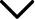

Médias et réseaux sociaux
Chapitre 1 : Historique

Les réseaux sociaux ont vu le jour aux États-Unis peu de temps après la propagation d’internet dans les années 1990.
L’apparition des nouveaux téléphones portables a déclenché l’émergence des réseaux sociaux...
Des algorithmes de ces réseaux (Facebook, Twitter…) ont été crées pour s’assurer que seul le contenu pertinent et intéressant aux yeux des utilisateurs atterrissent sur leurs fils d’actualité personnalisés. Le réseau qui combine le plus d’utilisateurs actifs aujourd’hui est facebook avant Youtube, puis Whatsapp et Instagram. C’est en janvier 2018 que l’histoire des réseaux sociaux débute car ont lieu des changements majeurs dans leurs algorithmes.
Des algorithmes de ces réseaux (Facebook, Twitter…) ont été crées pour s’assurer que seul le contenu pertinent et intéressant aux yeux des utilisateurs atterrissent sur leurs fils d’actualité personnalisés. Le réseau qui combine le plus d’utilisateurs actifs aujourd’hui est facebook avant Youtube, puis Whatsapp et Instagram. C’est en janvier 2018 que l’histoire des réseaux sociaux débute car ont lieu des changements majeurs dans leurs algorithmes.
Chapitre 2 : Qu’attendons nous de la part d’un utilisateur sur un réseau ?
Les cibles principales d’un réseau social seront qualifiées de “persona”. Ce terme est employé pour décrire un client idéal.
Des critères seront pris en compte tels que ses centres d’intérêts, son style de vie, son comportement sur les réseaux ainsi
que son parcours d’achats.
Afin de promouvoir sa propre image sur un réseau, la stratégie du storytelling sera mise en avant. Le storytelling est une méthode de communication qui balance entre l’émotion ; raconter une histoire avec la marque, la transformer en univers qui incite un “j’aime”. Et la séduction ; priorité aux jolis contenus pour inciter au partage (média de détente, rêve, inspiration, veille…).
Afin de promouvoir sa propre image sur un réseau, la stratégie du storytelling sera mise en avant. Le storytelling est une méthode de communication qui balance entre l’émotion ; raconter une histoire avec la marque, la transformer en univers qui incite un “j’aime”. Et la séduction ; priorité aux jolis contenus pour inciter au partage (média de détente, rêve, inspiration, veille…).
Chapitre 3 : Les stratégies sur les réseaux sociaux
Ces utilisateurs que l’on qualifie “d’influenceurs” seront différés sous plusieurs catégories. Pour cela, il faut analyser le
taux de reach (le nombre de likes par rapport aux abonnés) ; plus le taux est important, plus les marques sont intéressées.
Les “nano-influenceurs” ont jusqu’à 3000 abonnés, les “micros-influenceurs” ont jusqu’à 90 000 abonnés, puis ce seuil atteint
on parlera de “macro-influenceurs”.
Afin d’attirer le plus de monde, ces influenceurs utilisent des “hashtags”. Le hashtag est un slogan bilatéral qui va attirer les prospects séduits par le concept. Cependant, s’il y a trop d’hashtags (plus de 12, car il en faut entre 9 et 12), le post sera supprimé par instagram.
Le terme KPI, Key Performance Indicator Indicateur permet de voir si les objectifs d’un individu ont bien été atteints, nombre de visiteurs cliques, taux d’ouverture, nombre de leads
Afin d’attirer le plus de monde, ces influenceurs utilisent des “hashtags”. Le hashtag est un slogan bilatéral qui va attirer les prospects séduits par le concept. Cependant, s’il y a trop d’hashtags (plus de 12, car il en faut entre 9 et 12), le post sera supprimé par instagram.
Le terme KPI, Key Performance Indicator Indicateur permet de voir si les objectifs d’un individu ont bien été atteints, nombre de visiteurs cliques, taux d’ouverture, nombre de leads
Chapitre 4 : Analyse & Outils
L’analyse d’un individu sur les réseaux sociaux se fera sous plusieurs points de vues. En sociologie, le concept de réseau
social vise l’ensemble des relations sociales d’un individu. On y distingue une série de cercles concentriques autour de
celui-ci, le premier cercle constituant son foyer, puis celui de ses proches (famille élargie et amis proches), etc.
Par ailleurs, le réseau Linkedin utilise ce concept précis.
Plusieurs outils pour faciliter la gestion des réseaux sociaux sont disponibles, notamment Hootsuite qui permet de gérer plusieurs réseaux sociaux en même temps simplement en créant un poste pour twitter facebook et instagram sur le même site. Il y a également Google trends, permettant de connaître les tendances de recherche qui existent dans le monde.
Pour analyser l’évolution de la société et de l’environnement à travers les réseaux sociaux, la matrice SWOT (Strenght ; force, Weakness ; faiblesse, Opportunities ; Opportunités, Threats ; menaces) se révèle être un outil indispensable d’une efficacité redoutable. C’est l’analyse interne et externe d’une entreprise. Elle permet de faire face aux opportunités de marché. L’analyse SWOT est un outil d’audit marketing, une étape essentielle dans le domaine du marketing. Celle-ci sera faite lors de l’étape de la création d’un business afin de délimiter les enjeux et les options stratégiques dans une entreprise.
En effet, lorsque le SWOT est réalisé, nous pouvons déterminer les concurrents potentiels, notre réputation, la qualité du produit, mais également les menaces tels que les prix que les autres marchés proposent.
Plusieurs outils pour faciliter la gestion des réseaux sociaux sont disponibles, notamment Hootsuite qui permet de gérer plusieurs réseaux sociaux en même temps simplement en créant un poste pour twitter facebook et instagram sur le même site. Il y a également Google trends, permettant de connaître les tendances de recherche qui existent dans le monde.
Pour analyser l’évolution de la société et de l’environnement à travers les réseaux sociaux, la matrice SWOT (Strenght ; force, Weakness ; faiblesse, Opportunities ; Opportunités, Threats ; menaces) se révèle être un outil indispensable d’une efficacité redoutable. C’est l’analyse interne et externe d’une entreprise. Elle permet de faire face aux opportunités de marché. L’analyse SWOT est un outil d’audit marketing, une étape essentielle dans le domaine du marketing. Celle-ci sera faite lors de l’étape de la création d’un business afin de délimiter les enjeux et les options stratégiques dans une entreprise.
En effet, lorsque le SWOT est réalisé, nous pouvons déterminer les concurrents potentiels, notre réputation, la qualité du produit, mais également les menaces tels que les prix que les autres marchés proposent.
Chapitre 5 : Les données stockées
Les données qui seront stockées sur les réseaux sociaux ne sont récupérable que sur Facebook ; dans les paramètres plus
précisément. Il faut cliquer sur la petite flèche située dans la barre supérieur à droite. Restez sur la page des paramètres
généraux du compte. En bas, un lien vous invite à Télécharger une copie de vos données sur Facebook, cliquez dessus.